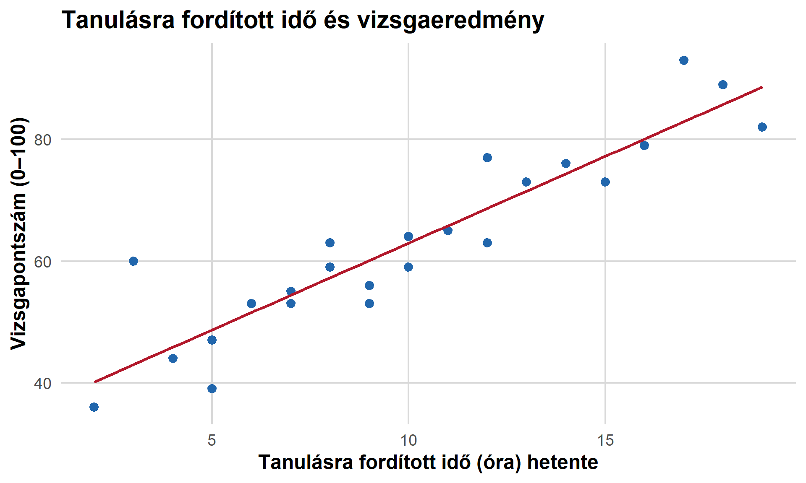
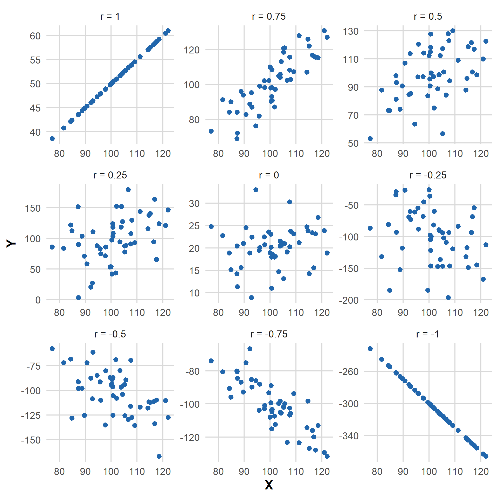
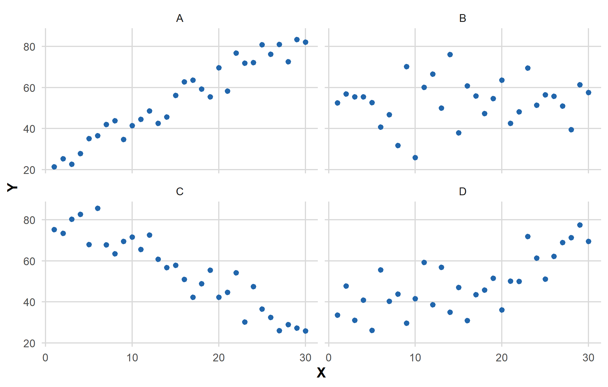
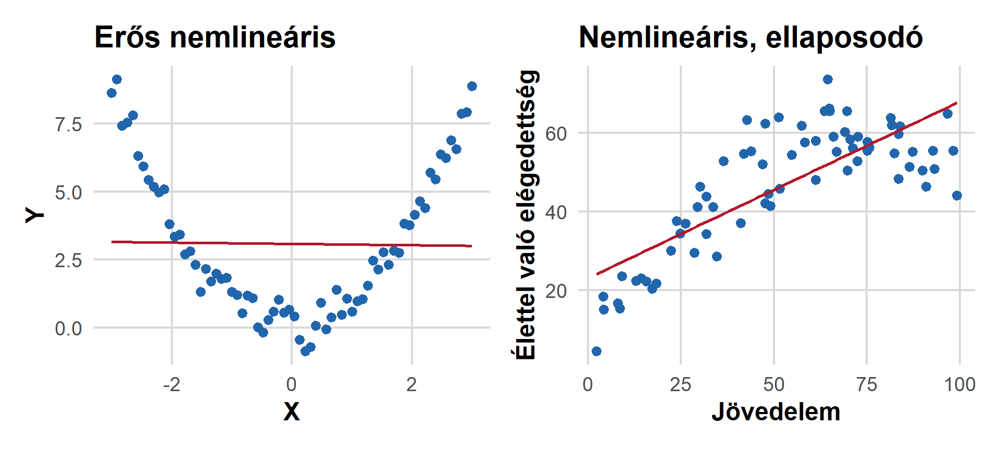
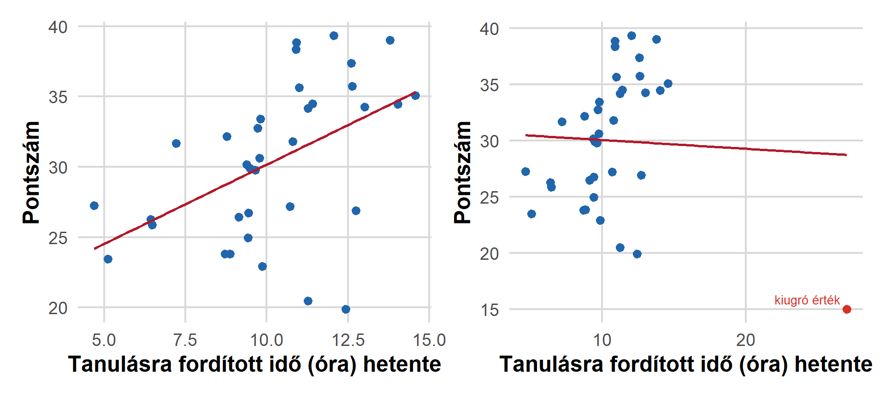
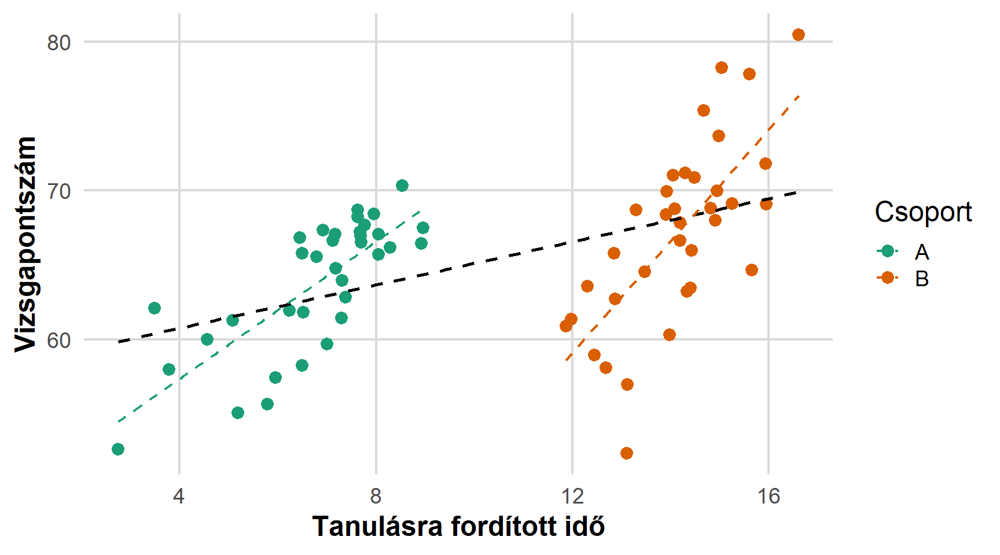
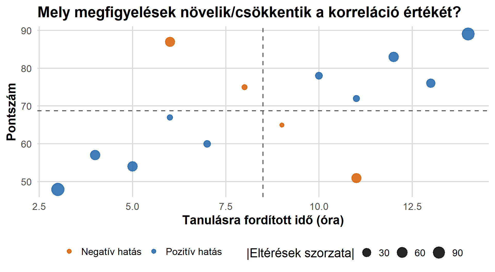
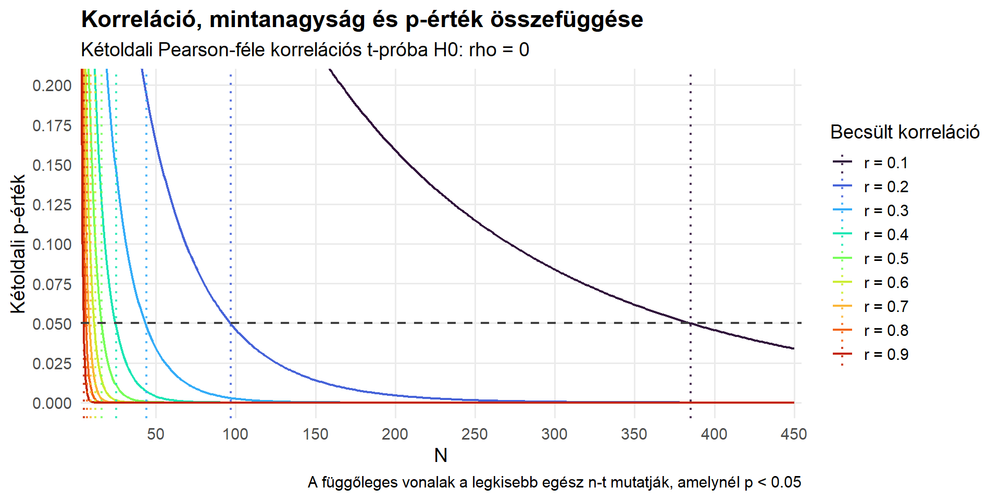

Pearson-féle korreláció
Statisztika 2. előadás
Korrelációelemzés
Alapkérdés
Összefügg-e két magas
mérési szintű változó
az alapsokaságban?
Példák
Összefügg
- a jövedelem az élettel való elégedettséggel?
- az életkor az intézmények iránti bizalommal?
- a sportolással töltött idő azzal, mennyire elégedett az egészségi állapotával?
- a közösségimédia-használat és a szorongás?
- elvégzett osztályok száma és az operalátogatás gyakorisága?
Alaphelyzet (vs. kereszttábla)
- független megfigyelések (ua.)
- (egyszerű) véletlen minta (ua.)
- két magas mérési szintű (intervallum-, vagy arányskála) változó (ker.táb: alacsony m.sz.)
- később: ordinális (és nem normális eloszlású skála) változók közötti összefüggés
- korreláció \(=\) az asszociáció egy formája
Cél
- annak felismerése, mikor alkalmas módszer a Pearson-féle korreláció
- pontdiagramok (scatter plot) értelmezése
- az \(r\) mutató előjelének és nagyságának értelmezése
- korreláció és oksági kapcsolat megkülönböztetése
- mintából becsült és sokasági korreláció megkülönböztetése
- hipotézis felállítása és megvizsgálása a sokasági korrelációra
Példa: adatok
| Diák | Tanulásra fordított órák / hét (\(X\)) | Vizsgapontszám (\(Y\)) |
|---|---|---|
| 1 | 3 | 48 |
| 2 | 5 | 55 |
| 3 | 7 | 61 |
| 4 | 9 | 63 |
| 5 | 11 | 72 |
| 6 | 13 | 74 |
| 7 | 15 | 83 |
Minden sor egy hallgató adatait tartalmazza
Pontdiagramok
Ábrázolás mindenekellőtt
Mielőtt nekiállnak becsülni a korrelációt, vizsgálják meg a kétváltozós kapcsolatot egy ábra segítségével!
A pontdiagram (scatter plot):
- egyik változó értékei a vízszintes (x) tengelyen
- másik változó értékei a függőleges (y) tengelyen
- minden megfigyelés egy pont a diagramon
Számítás előtt vizsgálják meg:
- kapcsolat irányát
- formáját: lineáris vagy görbe?
- erejét: szorosan elhelyezkedő pontok vagy szórtan?
- kiugró (főleg gyanús) esetek
- kirajzolódó alcsoportok
Példa: pontdiagram

Figure 1: Pozitív, megközelítőleg lineáris kapcsolat: a többet tanulók jellemzően több pontot szereznek.
A pontdiagram olvasása
Az előző ábra alapján:
Pozitív, közepesen erős, és megközelítőleg lineáris kapcsolat van a hetente tanulásra fordított órák száma és a vizsgapontszám között. Azok a hallgatók, akik többet készülnek, jellemzően nagyobb pontszámra számíthatnak, bár az egyéni szintű szóródás nem elhanyagolható.
A pontdiagram olvasása
A teljes értékelés tartalmazza:
- Kontextus: mit mérnek a változók
- Irány: pozitív vagy negatív
- Alak: lineáris, görbe, vagy nincs kivehető mintázat
- Erő: gyenge, közepes vagy erős (óvatosan)
- Szokatlan dolgok: kilógó értékek, csoportok, közök
Kapcsolat iránya és ereje

Figure 2: Az r előjele az irányt, abszolút nagysága az erőt mutatja
Gyakorlás: korrelációk sorbarendezése
Rendezzék sorba az alábbi ábrákat a legerősebb negatív korrelációtól a legerősebb pozitív korrelációig.

Kapcsolat iránya és ereje
- Pozitív: nagyobb x érték → nagyobb y érték
- Negatív: nagyobb x érték → kisebb y érték
- Nulla közeli: kevés vagy alig észrevehető lineáris kapcsolat
Összefüggés alakja

Figure 3: Nemlineáris összefüggések
A nulla-közeli \(r\) csak a lineáris kapcsolat hiányát mutatja, más kapcsolat lehet.
Kiugró értékek hatása

Figure 4: Egyetlen kiugró érték hatása
Kiugró értékek
Kérdések:
- Lehet, hogy csak adatbeviteli hiba?
- Valódi megfigyelés ugyanabból a sokaságból?
- Jelentős hatása van az \(r\)-re?
- Érdemes lehet a kihagyásával és ezzel az esettel együtt is lefuttatni az elemzést?
Alcsoportok

Figure 5: Az összesített kapcsolat elfedi a csoportszintű különbségeket
Látványosabb példa

Simpson-paradoxon (forrás: Wikipedia)
Alcsoportok kezelése
Mielőtt levonják a végkövetkeztetést, kérdezzék meg:
- Vannak-e elkülönülő társadalmi csoportok az adataim között?
- Ezeken a csoportokon belül hasonló kapcsolatot látunk?
- Van-e valamilyen harmadik változó, ami hatással lehet?
Ezeket az eseteket később a többváltozós elemzés tudja megfelelően kezelni.
Vigyázat: látszólagos korreláció
Két változó összefügg, ha mindkettő összefügg egy harmadikkal. Ez különösen gyakori eset, ha ez a harmadik változó az idő (pl. év).
Példákért: Tyler Vigen: Spurious Correlations
Egy konkrét példa: Vajfogyasztás és moziárak
Pearson-féle korreláció becslése
Mikor alkalmas mutató a Pearson-féle korrelációs együttható?
- két magas szintű változó
- megközelítőleg lineáris kapcsolat
- nincsenek zavaró kiugró értékek
- független megfigyelések
- legjobb: normális eloszlású változók
(→ hipotézisvizsgálat)
Alkalmas változók
A Pearson-féle korreláció skála mérési szintű változókkal működik legjobban
- Életkor
- Jövedelem (de: ferdeség)
- Elvégzett iskolai osztályok
- Heti munkaórák
- Standardizált skálák
Kérdéses esetek
- 4/5-értékű Likert-skálák
- Sokértékű skálák
Inkább Spearman-féle rangkorreláció (később)
Kiszámítása
A lineáris korreláció standard mérőeszköze
Mintából az alábbi képlettel számítjuk:
\[ r=\frac{\operatorname{cov}(X,Y)}{s_X\ast s_Y} \]
Ezzel egyenértékű az alábbi képlet:
\[ r = \frac{\sum_{i=1}^{n}(x_i-\bar{x})(y_i-\bar{y})} {\sqrt{\sum_{i=1}^{n}(x_i-\bar{x})^2} \ast \sqrt{\sum_{i=1}^{n}(y_i-\bar{y})^2}}. \]
Miért pozitív vagy negatív a korreláció?

Az \(r\) együttható tulajdonságai
| Tulajdonság | Jelentés |
|---|---|
| \(-1 \leq r \leq 1\) | Ezek közé az értékek közé esik |
| Előjele | A lineáris kapcsolat iránya |
| Abszolút értéke | A lineáris kapcsolat ereje |
| \(r=1\) | Tökéletes pozitív lineáris kapcsolat |
| \(r=-1\) | Tökéletes negatív lineáris kapcsolat |
| \(r=0\) | Nincs lineáris kapcsolat (másfajta lehet) |
| Nincs mértékegysége | Mértékegység-váltás nincs rá hatással |
| Szimmetrikus | \(r_{XY}=r_{YX}\) |
Előjel és nagyság értékelése
| Eredmény | Megfelelő interpretáció |
|---|---|
| \(r=+0.62\) | Közepesen erős pozitív kapcsolat |
| \(r=-0.48\) | Közepesen erős negatív kapcsolat |
| \(r=+0.08\) | Gyenge pozitív kapcsolat |
| \(r=-0.91\) | Nagyon erős negatív kapcsolat |
Figyelem
Nincsenek kőbe vésett határértékek a kapcsolat erősségének felméréséhez. Az interpretáció többé-kevésbé Önökre van bízva. Az értelmezéshez mindig nézzék meg a pontdiagrammot!
Gyakorlás: előjel és nagyság
Állítsák sorba az alábbi korrelációkat a leggyengébbtől a legerősebbig!
| Érték |
|---|
| \(r=0.24\) |
| \(r=-0.31\) |
| \(r=0.04\) |
| \(r=0.72\) |
| \(r=-0.83\) |
Gyakorlás: előjel és nagyság
Állítsák sorba az alábbi korrelációkat a leggyengébbtől a legerősebbig!
| Érték | Sorrend |
|---|---|
| \(r=0.24\) | 2 |
| \(r=-0.31\) | 3 |
| \(r=0.04\) | 1 |
| \(r=0.72\) | 4 |
| \(r=-0.83\) | 5 |
Példa: korreláció értelmezése
450 hallgatóval készített kutatás alapján:
\[ r_{\text{tanulás, ponteredmény}}=0.46 \]
Mennyit kaptunk volna, ha
- a tanulásra fordított időt percekben mértük volna? → ugyanúgy \(r_{t,p}=0.46\)
- a vizsgaeredményt százalékban mértük volna? → ugyanúgy \(r_{t,p}=0.46\)
Példa: korreláció értelmezése
Jó értelmezés:
A hetente tanulásra fordított idő és a vizsgapontszám között közepesen erős pozitív kapcsolatot mértünk a mintában. Azok a tanulók, akik több tanulással töltött időről számoltak be, jellemzően több pontot szereztek a vizsgán.
Mit nem jelent ez:
- Minden plusz óra, amit tanulásra fordítanak, ugyanannyi plusz ponthoz vezet (feltételezi, de nem bizonyítja)
- Mindenki, aki többet tanul, több pontra számíthat (nem determinizmus)
- Azért kaptak több pontot, mert többet tanultak (potenciális alternatív magyarázatok)
- A tanulásra fordított idő az egyedüli releváns magyarázó tényező
- A kapcsolat minden egyetemen, évfolyamon, szakon, stb. azonos
Korreláció vs. okság
Tételezzük fel, hogy pozitívan korrelál a közösségimédia-használat és a szorongás.
A mérés minőségi problémáit kizárva is a magyarázat többféle lehet:
| Lehetséges összefüggés | Például |
|---|---|
| \(X \rightarrow Y\) | A több használat növeli a szorongást |
| \(Y \rightarrow X\) | A szorongóbb emberek többet használják |
| Harmadik változó (\(Z\)) | A társas kapcsolatok hiánya növeli mindkettőt |
Korreláció vs. okság

Forrás: xkcd
Hipotézisvizsgálatok
Sokasági és mintabeli korreláció
| Mennyiség | Jelölés | Jelentés |
|---|---|---|
| Sokasági korreláció | \(\rho\) (“ró”) | Ismeretlen lineáris asszociáió a sokaságban |
| Mintabeli korreláció | \(r\) | Mintában megfigyelt lineáris asszociáció; \(\rho\) becslése |
\[ \overline{x} \rightarrow \mu \qquad p \rightarrow P(\xi=x_i) \qquad s^* \rightarrow \sigma \qquad r \rightarrow \rho \]
Az \(r\) értéke akkor is változik mintáról-mintára, ha a sokaságban nem változik az összefüggés.
Leírás és következtetés
Hipotézisvizsgálat alapkérdése: a megfigyeléseink lehetnek-e a véletlen művei
Ebban az esetben: lehetséges-e úgy megfigyelni ekkora korrelációt egy mintában, ha a sokaságban függetlenek egymástól a változók?
Kétoldali próba hipotézisei:
\[ H_0: \rho=0 \\ H_1: \rho\ne0 \]
Egyoldali próba is lehetséges (ha előre így fogalmazzuk meg):
\[ H_1: \rho>0 \qquad\text{vagy}\qquad H_1: \rho<0 \]
Tesztstatisztika
\[ t = r\sqrt{\frac{n-2}{1-r^2}}, \qquad df=n-2. \] Feltétel: normális eloszlású változók
Értelmezéshez:
- lineáris kapcsolat erősségét méri
- függ \(r\)-től és \(N\)-től
- statisztikai szignifikancia nem ugyanaz, mint az érdemi összefüggés
Becsült korreláció és mintanagyság
Tegyük fel, hogy \(r=0.20\)
| Mintanagyság | Kétoldali p-érték | Következtetés |
|---|---|---|
| \(n=25\) | \(p\approx .34\) | Gyenge érv \(\rho=0\)-val szemben |
| \(n=500\) | \(p<.001\) | Erős érv \(\rho=0\)-val szemben |
Jó gyakorlat
A kis p-érték mérsékelt korrelációnál is kijöhet, ha a minta nagy. Közöljék és értelmezzék az \(r\) értékét, a hozzá tartozó \(p\)-értékkel együtt.
Becsült korreláció és mintanagyság

Kiszámítás példa
Egy \(n=80\) hallgatói mintában:
\[ r_{\text{tanulás, pontszám}}=0.35 \]
1: hipotézisek
\[ H_0:\rho=0 \qquad\text{vs}\qquad H_1:\rho\ne0. \]
2: tesztstatisztika
\[ t=0.35\sqrt{\frac{80-2}{1-0.35^2}} \approx3.30, \qquad df=78. \]
3: eredmény
\[ p\approx0.0015 \]
4: következtetés
Elvetjük \(H_0\)-t \(\alpha=0.05\) szignifikanciaszint mellett. Az adatok pozitív lineáris sokasági korrelációra engednek következtetni.
Eredmények közlése
Közöljék a kontextust, az irányát, nagyságát, bizonytalanságot.
Például:
A tanulásra fordított heti idő pozitívan függött össze a vizsgaeredménnyel. (\(n=80\), \(r=0.35\), \(df=78\), \(p=0.002\)). Azok a hallgatók, akik több készülésről számoltak be, várhatóan több pontot kaptak. Az összefüggés közepesen erős.
Még jobb, ha a becsült korreláció mellét konfidenciaintervallumot is meg tudnak adni:
\(r=0.35\), 95% CI \([0.14,0.52]\), \(p=0.002\).
Ez azt is megmutatja, milyen értékek közé esik nagy megbízhatósággal a sokasági korreláció.
Összefoglalás
Korrelációelemzés menete
- Kutatási kérdés két numerikus változó összefüggéséről
- Adatok vizsgálata: mérési szint, pontdiagram, linearitás, csoportok, kiugró értékek, hiányzó értékek
- Próba kiválasztása: megfelel-e a Pearson-féle korreláció?
- Kapcsolat leírása: kontextus, irány, erősség, alak.
- \(r\) kiszámítása és közlése: optimális esetben konfidenciaintervallummal.
- Hipotézisvizsgálat: \(H_0:\rho=0\), ha valamilyen sokaságra akarunk következtetést levonni, és a feltételek teljesülnek.
- Korreláció és okság megkülönböztetése: alternatívák számbavétele.
Legfontosabb információk
- Pearson-féle \(r\) a lineáris asszociáció erősségét méri két magas mérési szintű változó között.
- Az \(r\) értéke \(-1\) és \(+1\) közé esik. Az előjel az irányát, \(|r|\) pedig a nagyságát mutatja.
- Az \(r\) értéke szimmetrikus, és független a mértékegységektől.
- A hipotézisvizsgálat általában a \(H_0:\rho=0\) hipotézist vizsgálja.
- A statisztikai szignifikancia a becsült korreláció és a mintanagyság függvénye.
- A korreláció (is) együttjárást mér, nem pedig oksági kapcsolatot.
Pearson-féle korreláció